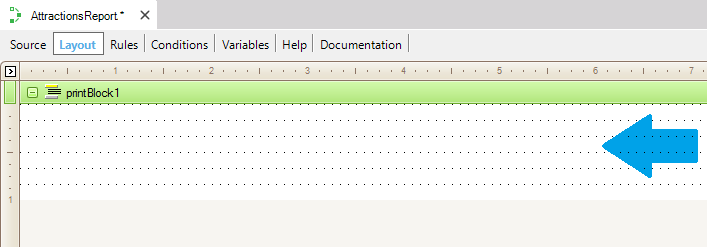
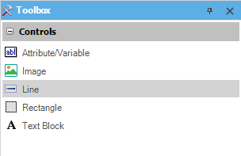

A Printblock is a kind of control that may contain several types of controls (attributes, variables, images, lines, etc.). It is available specifically in the Layout section of each Procedure object:  By default, the Layout section of each Procedure contains an empty first printblock (named: printBlock1) ready to be used. The following Toolbox offers the controls which may be dragged and dropped to a Printblock:  |
| Backlinks | |
| End-user customizable reports | Procedure Layout |